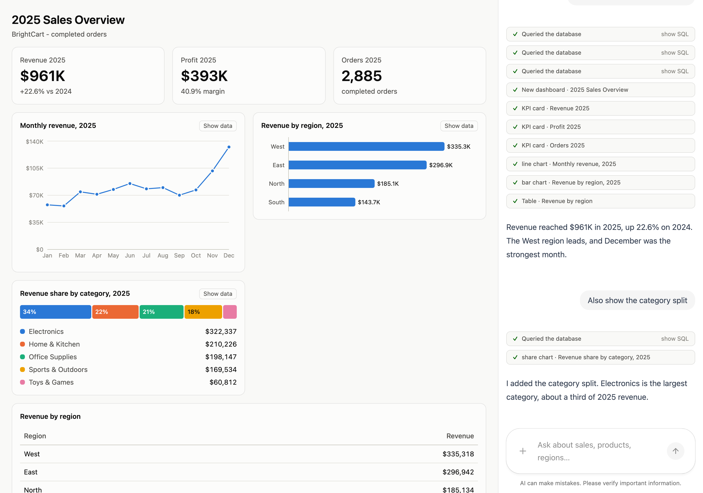

AI402Z · Special Topics: Agentic UI
Build a chatbot that draws its own dashboard
You ask a business question in a chat. An AI agent reads a database, then builds a dashboard on your screen out of React components. In this tutorial you install it, run it, and learn how every piece works.
- Google ADK
- CopilotKit
- AG-UI protocol
- LiteLLM
- Arize Phoenix
- SQLite
- Next.js

- What a tool is, and why a React component can be one.
- How to build an agent with Google ADK and give it a database tool.
- How CopilotKit connects that agent to a web page.
- How to switch LLM provider with LiteLLM, and how to see inside the agent with Arize Phoenix.
Part 1 takes about 30 minutes. You need basic Python and JavaScript. You do not need to know React well.
Start here · A
The idea: UI as tools
An LLM can only produce text. To make it do things, we give it tools. A tool is a function with a name, a description and a list of parameters. The LLM cannot run the function itself. It replies with a request such as “please call run_sql_query with this SQL”, our code runs the function, and the result goes back to the LLM. An LLM that works in this loop is called an agent.
Most tools fetch or change data on a server. This tutorial adds a second kind.
Backend tools
A Python function on the server. Here there is one: run_sql_query, which reads the database.
The result is data.
Frontend tools (UI tools)
A JavaScript function in the browser. Here there are four, such as add_chart. Each one puts a React component on the page.
The result is something you can see.
To the LLM both kinds look the same: a name, a description, some parameters. That is the whole trick. When the LLM decides to call add_chart with a title and some numbers, a chart appears. The LLM chooses which components to show and with what data. Your React code decides how they look. This pattern is called agentic UI or generative UI.
Start here · B
Architecture
The app is two programs that you start separately: a Python backend that runs the agent, and a Next.js web app that shows the page. They talk to each other with AG-UI, an open protocol for streaming agent events (text, tool calls, results) to a user interface.
The numbers in the picture are the steps of one question:
- You type a question. The page sends it to the agent, together with the list of UI tools the page offers.
- The agent sends the LLM its instructions, your question and the list of all tools, backend and UI. The LLM answers with tool calls.
- Calls to
run_sql_queryrun in Python on the server. The rows go back to the LLM, which now has real numbers. - Calls to UI tools cannot run on the server. The agent pauses, and the calls travel to the browser as AG-UI events.
- The browser runs the handler of each UI tool. The handler updates React state, and the component appears on the dashboard.
- The browser sends back a short result for each tool. The agent continues, and the LLM writes the summary you read in the chat.
| Piece | What it does here |
|---|---|
| Google ADK | Agent Development Kit. The Python framework that runs the agent loop: call the LLM, run the tools it asks for, repeat. |
| ag-ui-adk | The bridge. It translates ADK events into AG-UI events and back, and serves them with FastAPI. |
| CopilotKit | The React side. It gives you the chat component and the hooks that turn components into tools. |
| LiteLLM | A translator that lets ADK use LLMs from other providers (OpenAI, Anthropic, Groq, Ollama and many more). |
| Arize Phoenix | A trace viewer. It records every LLM call and tool call so you can inspect them. |
| SQLite | The database, stored in one file. It holds two years of sales for a made-up shop called BrightCart. |
Part 1 · Run it
Step 1
Install the tools
You need three programs and one API key. Open a terminal and check what you already have.
| You need | Version | Check | Where to get it |
|---|---|---|---|
| Git | any | git --version | git-scm.com |
| Node.js | 20.9 or newer | node --version | nodejs.org, pick the LTS version |
| uv | any | uv --version | the command below |
| Gemini API key | free | aistudio.google.com/apikey |
Install uv
uv is a fast package manager for Python. It also downloads the right Python version for this project, so you do not have to install Python yourself.
curl -LsSf https://astral.sh/uv/install.sh | shpowershell -ExecutionPolicy ByPass -c "irm https://astral.sh/uv/install.ps1 | iex"Close the terminal and open a new one. Then uv --version should print a version number.
Get a Gemini API key
- Open aistudio.google.com/apikey and sign in with a Google account.
- Click Create API key.
- Copy the key and keep it somewhere safe. You will paste it in step 4.
An API key works like a password. Do not post it in a chat, a screenshot or a commit. This project keeps it in a file called .env, which Git is told to ignore.
The free tier of the Gemini API is enough for this tutorial. It limits how many requests you can send per minute, so an occasional “quota” error is normal. See Troubleshooting.
Step 2
Get the code
git clone https://github.com/Aleimar/AI402ZAgenticUI.git
cd AI402ZAgenticUIThe project has two halves. You will read these files in part 2. For now, just see where things are.
AI402ZAgenticUI/
├── backend/ Python: the agent
│ ├── agent.py the agent = model + instructions + tools
│ ├── tools.py the backend tool: run_sql_query
│ ├── main.py the web server that exposes the agent
│ ├── tracing.py Arize Phoenix setup
│ ├── warmup/first_agent/agent.py optional warm-up: a tiny agent for ADK Web
│ ├── data/seed_database.py creates the sample database
│ ├── data/sales.db the sample database
│ ├── pyproject.toml the list of Python packages to install
│ └── .env.example template for your settings and API key
│
├── frontend/ Next.js + CopilotKit: the web page
│ ├── package.json the list of JavaScript packages to install
│ ├── app/page.tsx the page: dashboard on the left, chat on the right
│ ├── app/layout.tsx connects the page to the agent
│ ├── app/api/copilotkit/.../route.ts the CopilotKit runtime
│ ├── hooks/useDashboardTools.tsx the UI tools (the heart of this tutorial)
│ └── components/ KpiCard, ChartCard, DataTable, Dashboard
│
└── docs/ this tutorialWhat is not in the repository
Google ADK, CopilotKit and the other libraries are not in the code you just cloned. Downloaded packages are large and are never uploaded to GitHub. The repository only carries the list of packages. You install your own copy in the next steps.
| Missing after cloning | What it is | You create it in |
|---|---|---|
backend/.venv/ | The Python packages: Google ADK, LiteLLM, Arize Phoenix. About 900 MB. | Step 3, with uv sync |
backend/.env | Your private settings and API key. | Step 4 |
frontend/node_modules/ | The JavaScript packages: CopilotKit, Next.js, React. About 1 GB. | Step 5, with npm install |
The files named .gitignore tell Git to leave these out. That is also why you can safely run git add . in your own copy later: your packages and your API key stay on your computer.
You will use two terminals at the same time, one for the backend and one for the frontend. Step 10 adds a third.
Step 3
Install Google ADK and build the database
Install the Python packages
In your first terminal, go into the backend folder and install the packages.
cd backend
uv syncuv sync reads pyproject.toml, the list of packages this project needs, and installs them into a private Python environment in backend/.venv. The first run downloads about 180 packages, so give it a few minutes. This is the list it reads:
dependencies = [
"google-adk==2.15.0", # the agent framework
"ag-ui-adk==0.14.0", # the bridge between ADK and the web page
"litellm==1.110.2", # other LLM providers (step 9)
"fastapi==0.165.0", # the web server
"uvicorn==0.54.0",
"python-dotenv==1.2.4", # reads the .env file
"arize-phoenix==22.0.1", # tracing (step 10)
"arize-phoenix-otel==0.17.3",
"openinference-instrumentation-google-adk==1.1.9",
]Every version is fixed with ==, so you install exactly what this tutorial was tested with.
Run uv run python -c "import google.adk; print('Google ADK', google.adk.__version__)". It prints Google ADK 2.15.0.
Adding Google ADK to a project of your own
You do not need this for the tutorial. In a new, empty folder, these two commands create a project and install the same agent packages:
uv init --python 3.12
uv add google-adk==2.15.0 ag-ui-adk==0.14.0 litellm==1.110.2Build the database
uv run data/seed_database.pyThe script creates data/sales.db and prints:
Created .../backend/data/sales.db
products 30 rows
customers 320 rows
orders 5,617 rows
order_items 10,238 rows
sales 9,445 rows
total revenue (completed orders): $1,745,074.85The data is random but seeded, so everybody gets exactly these numbers. That makes it easy to check the agent's answers against your classmates'. The repository already contains sales.db, and the script simply rebuilds it. Open data/seed_database.py if you want to see how the data is made.
What is in it
BrightCart is a made-up retailer. The database covers its orders from January 2024 to December 2025.
| Table | Rows | Columns |
|---|---|---|
products | 30 | product_id, product_name, category, unit_price, unit_cost |
customers | 320 | customer_id, customer_name, segment, region, city, signup_date |
orders | 5,617 | order_id, customer_id, order_date, channel, status |
order_items | 10,238 | order_item_id, order_id, product_id, quantity, unit_price, discount_pct |
sales (view) | 9,445 | One row per product sold in a completed order, with the customer and product details joined in and revenue, cost and profit already calculated. |
The sales view is there to make the agent's job easier. Most questions can be answered from it with one short query. Try one yourself:
uv run python -c "from tools import run_sql_query; print(run_sql_query('SELECT region, ROUND(SUM(revenue)) AS revenue FROM sales GROUP BY region ORDER BY revenue DESC'))"{'status': 'success', 'columns': ['region', 'revenue'], 'rows': [['West', 604495.0], ['East', 541786.0], ['North', 342272.0], ['South', 256522.0]], 'row_count': 4}You just called run_sql_query by hand. In a few minutes the agent will call the same function.
Step 4
Start the agent
The backend reads its settings from a file called .env. Create it from the template.
cp .env.example .envcopy .env.example .envOpen backend/.env in your editor and paste your key after the equals sign, with no spaces and no quotes:
GOOGLE_API_KEY=paste-your-key-here
MODEL=gemini-4-hydrogenSave the file, then start the server:
uv run main.pyModel: gemini-4-hydrogen
Phoenix tracing: off
Agent endpoint: http://localhost:8000/
INFO: Started server process [12345]
INFO: Waiting for application startup.
INFO: Application startup complete.
INFO: Uvicorn running on http://127.0.0.1:8000 (Press CTRL+C to quit)Open http://localhost:8000/health in your browser. You should see {"status":"ok","model":"gemini-4-hydrogen","tracing":false}.
Leave this terminal running. If the output contains WARNING: missing in backend/.env: GOOGLE_API_KEY, the key was not saved in the right file. Fix .env, stop the server with Ctrl+C and start it again.
Using pip instead of uv
You need Python 3.11, 3.12 or 3.13. Replace steps 3 and 4 with:
cd backend
python3 -m venv .venv
source .venv/bin/activate
pip install -r requirements.txt
python data/seed_database.py
cp .env.example .env
python main.pycd backend
python -m venv .venv
.venv\Scripts\activate
pip install -r requirements.txt
python data\seed_database.py
copy .env.example .env
python main.pyPut your key in .env before the last command. In the rest of the tutorial, wherever you read uv run something, activate the environment and type the command without uv run. For a file such as main.py, type python main.py.
Optional warm-up
Meet Google ADK with a tiny agent
Before you start the full app, spend ten minutes with the smallest useful agent. It is not part of the dashboard. It has one tool and answers in plain text, and you talk to it in ADK Web, a test page that ships with Google ADK. If you want to go straight to the dashboard, skip to step 5.
Read the agent
The whole agent is one file. It has the three parts every ADK agent has: a tool, a model, and the agent that joins them with instructions.
"""Warm-up: the smallest useful Google ADK agent.
This file is NOT part of the dashboard app. It exists so you can meet ADK on
its own first. Try it in ADK's built-in test page:
uv run adk web warmup --port 8001
then open http://localhost:8001
An agent is three things: a MODEL, INSTRUCTIONS and TOOLS.
"""
import os
import sqlite3
from pathlib import Path
from google.adk.agents import LlmAgent
from google.adk.models.lite_llm import LiteLlm
DB_PATH = Path(__file__).parents[2] / "data" / "sales.db"
# ---------------------------------------------------------------------------
# 1. A TOOL is a normal Python function.
# ADK shows the LLM its name, its parameters and its docstring. The LLM
# reads them to decide WHEN to call the function and WITH WHAT arguments.
# ---------------------------------------------------------------------------
def get_revenue_by_region(year: int) -> dict:
"""Get BrightCart's total revenue for each sales region in one year.
Args:
year: The year to report on. The data covers 2024 and 2025.
Returns:
A dictionary such as {"year": 2025, "revenue_usd": {"West": 335318.0, ...}}.
"""
connection = sqlite3.connect(DB_PATH)
try:
rows = connection.execute(
"SELECT region, ROUND(SUM(revenue)) FROM sales WHERE order_year = ? "
"GROUP BY region ORDER BY 2 DESC",
(str(year),),
).fetchall()
finally:
connection.close()
if not rows:
return {"status": "error", "error_message": f"There is no data for {year}."}
return {"status": "success", "year": year, "revenue_usd": dict(rows)}
# ---------------------------------------------------------------------------
# 2. The MODEL. Same rule as the main app: a plain name is a Gemini model,
# "provider/model" goes through LiteLLM (step 9 of the tutorial).
# ---------------------------------------------------------------------------
MODEL_NAME = os.getenv("MODEL") or "gemini-4-hydrogen"
model = LiteLlm(model=MODEL_NAME) if "/" in MODEL_NAME else MODEL_NAME
# ---------------------------------------------------------------------------
# 3. The AGENT puts model, instructions and tools together.
# `adk web` looks for a variable with exactly this name: root_agent.
# ---------------------------------------------------------------------------
root_agent = LlmAgent(
name="first_agent",
model=model,
description="Answers questions about BrightCart revenue by region.",
instruction=(
"You are a helpful assistant for BrightCart, a retail company. "
"When the user asks about revenue or regions, call get_revenue_by_region "
"to get real numbers. Never guess a number. Answer in one or two sentences."
),
tools=[get_revenue_by_region],
)- The tool is a normal Python function. The type hint
year: intand the docstring are what the LLM sees. Good docstrings make good tools. - The agent must be stored in a variable called
root_agent. That is the name ADK looks for. - Next to it is a one-line
__init__.pycontainingfrom . import agent. ADK needs it to load the folder.
Run it in ADK Web
Open a new terminal. The server from step 4 can keep running, because this command uses another port.
cd backend
uv run adk web warmup --port 8001warmup is the folder that holds the agents. Every subfolder in it is one agent. ADK reads your API key from the same backend/.env you made in step 4.
+-----------------------------------------------------------------------------+
| ADK Web Server started |
| |
| For local testing, access at http://127.0.0.1:8001. |
+-----------------------------------------------------------------------------+- Open http://localhost:8001. The agent
first_agentis already selected at the top left. - Type a question in the box at the bottom: Which region had the most revenue in 2025?
- Watch the Events list. One question becomes four events.
#1 you Which region had the most revenue in 2025?
#2 the agent get_revenue_by_region(2025) the LLM asks for the tool
#3 the agent get_revenue_by_region the function ran, the result goes back
#4 the agent The West region had the most revenue in 2025 ...Click event #2, then look at the panel on the left. It shows the exact request that was sent to the LLM and what came back. The picture there shows the agent with its one tool.
The answer names the West region with about $335,318. That number came from the database through your tool, not from the LLM's memory.
Try these
- Ask “And in 2024?”. The agent remembers the conversation and calls the tool again with
2024. - Ask “What about 2030?”. The tool returns an error message, and the agent explains it in words.
- Ask “Hello, who are you?”. No tool call appears, because the LLM decides when a tool is needed.
- Ask “Which product sold best?”. The agent cannot answer. It only has one narrow tool. The real app fixes this by giving the agent a general tool,
run_sql_query.
When you are done, stop ADK Web with Ctrl+C.
ADK Web only knows backend tools. The dashboard agent also needs tools that live in the browser, so it needs its own web page. That page is what you install next.
Step 5
Install CopilotKit and start the web app
Install CopilotKit
Open a second terminal in the project folder. The backend keeps running in the first one.
cd frontend
npm installCopilotKit is not part of the code you cloned. npm install reads package.json, downloads every package listed there, and puts them in a new folder, frontend/node_modules. This is the list it reads:
"dependencies": {
"@ag-ui/client": "1.0.5",
"@copilotkit/react-core": "1.90.1",
"@copilotkit/runtime": "1.90.1",
"next": "16.4.6",
"react": "19.3.1",
"react-dom": "19.3.1",
"recharts": "3.11.1",
"zod": "3.25.76"
},| Package | What it gives you |
|---|---|
@copilotkit/react-core | CopilotKit for the browser: the <CopilotKit> provider, the <CopilotChat> component and the useFrontendTool hook. |
@copilotkit/runtime | CopilotKit for the server: the runtime that forwards the chat to the agent. |
@ag-ui/client | HttpAgent, which speaks the AG-UI protocol to the Python backend. |
zod | Describes the parameters of each UI tool. |
next, react, react-dom | The web framework. |
recharts | Draws the charts. |
npm install takes a few minutes the first time. It prints some “deprecated” and “vulnerabilities” notices that come from packages this project depends on. They do not stop the app. Do not run npm audit fix, because it changes the tested versions.
Run npm ls @copilotkit/react-core @copilotkit/runtime --depth=0. Both packages are listed with version 1.90.1:
agentic-ui-frontend@0.1.0 .../AI402ZAgenticUI/frontend
├── @copilotkit/react-core@1.90.1
└── @copilotkit/runtime@1.90.1Adding CopilotKit to a project of your own
You do not need this for the tutorial. In an existing Next.js project, this one command installs the same CopilotKit packages:
npm install @copilotkit/react-core@1.90.1 @copilotkit/runtime@1.90.1 @ag-ui/client@1.0.5 zod@3.25.76The three files you then write are the ones explained in step 8: the runtime route, the provider in the layout, and your tools.
Start the web app
npm run dev▲ Next.js 16.4.6 (Turbopack)
- Local: http://localhost:3000
- Network: http://192.168.1.20:3000
✓ Ready in 300msOpen http://localhost:3000. You see an empty dashboard on the left with the text “Your dashboard will appear here”, and a chat on the right.
Both terminals also print a line or two about anonymous telemetry from Next.js and CopilotKit. That is normal. Each line says how to turn it off.
Step 6
Ask for a dashboard
Click the suggestion 2025 overview under the chat box, or type a question yourself:
How did sales perform in 2025?Now watch both sides of the screen.
- In the chat, small status lines appear one after another. Queried the database is the backend tool. Click show SQL to read the query the agent wrote. New dashboard, KPI card and the chart lines are UI tools.
- On the left, the dashboard fills in, one component per tool call.
- At the end, the agent writes a one or two sentence summary.
Then keep talking to it. The agent remembers the conversation.
Also show how revenue splits across product categories.
Add a table of the top 5 products by revenue.
Compare revenue and profit across regions.
Which sales channel grew the most from 2024 to 2025?On every chart, the Show data button switches between the chart and its numbers.
You never wrote code that says “for an overview question, show three KPI cards and a line chart”. The LLM decided that. Ask the same question twice and you may get a different layout. Your code only defines what components exist.
If something does not work, go to Troubleshooting. Errors from the agent appear as a red bar at the bottom of the page.
Part 2 · Understand it
Step 7
Read the backend
The backend is four short Python files. Read them in this order.
The backend tool
A tool in Google ADK is an ordinary Python function. ADK reads the function name, the type hints and the docstring, and turns them into the description the LLM sees. That is why the docstring is written for the LLM.
def run_sql_query(sql: str) -> dict:
"""Run one read-only SQL query on the BrightCart sales database and return the rows.
Use this tool whenever you need numbers. The database is SQLite.
Args:
sql: A single SQLite SELECT statement. Aggregate inside SQL (SUM, COUNT,
GROUP BY, ORDER BY, LIMIT) so that the result is small.
Returns:
On success: {"status": "success", "columns": [...], "rows": [[...], ...], "row_count": 3}
On failure: {"status": "error", "error_message": "..."} - read the message,
fix the SQL and try again.
"""
statement = sql.strip().rstrip(";").strip()
if not statement.lower().startswith(("select", "with")):
return {"status": "error", "error_message": "Only SELECT statements are allowed."}
if ";" in statement:
return {"status": "error", "error_message": "Send one statement at a time (no ';')."}
try:
connection = _connect()
try:
cursor = connection.execute(statement)
columns = [column[0] for column in cursor.description]
rows = cursor.fetchmany(MAX_ROWS + 1)
finally:
connection.close()
except (sqlite3.Error, FileNotFoundError) as error:
return {"status": "error", "error_message": str(error)}
result = {
"status": "success",
"columns": columns,
"rows": [list(row) for row in rows[:MAX_ROWS]],
"row_count": min(len(rows), MAX_ROWS),
}
if len(rows) > MAX_ROWS:
result["note"] = f"Only the first {MAX_ROWS} rows are shown. Aggregate or add LIMIT."
return result- The database is opened in read-only mode, and only
SELECTstatements are accepted. An agent should get the smallest permission that does the job. - Errors are returned, not raised. The LLM reads the error message and usually fixes its own SQL on the next try.
- At most 50 rows go back. Everything a tool returns is sent to the LLM and costs tokens.
The same file has a helper, describe_database(), that lists every table and column as text. You will see where it is used next.
The agent
An ADK agent is a model, instructions and a list of tools.
root_agent = LlmAgent(
name="reporting_agent",
model=choose_model(),
description="Answers business questions about BrightCart sales by building dashboards.",
instruction=INSTRUCTION,
tools=[
run_sql_query, # BACKEND tool: a Python function that runs on this server
AGUIToolset(), # FRONTEND tools: whatever tools the web page registers (the UI!)
],
)AGUIToolset() is the important line. It is a placeholder that means “plus whatever tools the web page offers”. The backend does not know their names. Each request from the browser carries the list, and the bridge fills it in. That is why you can add a UI tool later without touching Python.
The instructions are a long string named INSTRUCTION in the same file. Two parts of it matter most. First, the output of describe_database() is pasted in, so the LLM knows the tables without spending a tool call. Second, it describes the way of working:
# How to answer a data question
Step 1 - Get the numbers. Call `run_sql_query`. You may call it several times
in the same turn. Never invent numbers: every number you show must come from
a query result. If a query fails, read the error, fix the SQL and retry.
Step 2 - Build the dashboard. Your UI tools draw components on the user's
screen. Call all of them together in ONE turn, in this order:
1. `create_dashboard` - always first. It clears the screen and sets the title.
2. `add_kpi_card` - 2 to 4 headline numbers.
3. `add_chart` - 1 to 3 charts. Use "line" for trends over time,
"bar" to compare categories or show a ranking, and
"share" for the parts of one total (6 parts at most).
Set value_format to "currency" when the values are money.
4. `add_table` - optional, when the exact figures matter (10 rows at most).
Step 3 - Finish with one or two sentences that state the main insight. Do not
repeat every number: the dashboard already shows them.The instructions name the UI tools, but they do not define them. They only suggest an order. Change this text and you change how the agent behaves, which is one of the exercises in step 11.
The server
The last file puts the agent on the network so the web app can reach it.
# An ADK "App" wraps the agent together with app-level settings.
# is_resumable=True lets a run PAUSE when the agent calls a frontend tool,
# wait for the browser to draw the component, and then continue.
adk_app = App(
name="reporting_app",
root_agent=root_agent,
resumability_config=ResumabilityConfig(is_resumable=True),
)
# ADKAgent is the bridge: it translates between ADK events and AG-UI events.
agui_agent = ADKAgent.from_app(
adk_app,
user_id="student", # one shared demo user (there is no login in this tutorial)
use_in_memory_services=True, # keep chat sessions in memory (they are lost on restart)
)
app = FastAPI(title="Agentic UI tutorial - reporting agent")
add_adk_fastapi_endpoint(app, agui_agent, path="/")Appwithis_resumable=Truelets a run pause. When the LLM calls a UI tool, the server cannot run it. The run stops, waits for the browser, and continues when the result arrives.ADKAgentis the bridge from the architecture picture. It turns ADK's events into AG-UI events.add_adk_fastapi_endpointserves the bridge athttp://localhost:8000/.
Step 8
Read the frontend
The frontend is a normal Next.js app. Four files do the agent work.
The runtime
The browser does not talk to Python directly. It talks to the CopilotKit runtime, a small piece of server code inside the Next.js app, which forwards everything to the agent.
import { CopilotRuntime, createCopilotRuntimeHandler } from "@copilotkit/runtime/v2";
import { HttpAgent } from "@ag-ui/client";
const runtime = new CopilotRuntime({
agents: {
// "reporting_agent" is the name the frontend uses to pick this agent.
// It must match the `agent` prop in app/layout.tsx.
reporting_agent: new HttpAgent({
url: process.env.AGENT_URL ?? "http://127.0.0.1:8000/",
}),
},
// There is no login in this tutorial, so every visitor is the same demo user.
identifyUser: () => ({ id: "student", name: "Student" }),
});
const handler = createCopilotRuntimeHandler({
runtime,
basePath: "/api/copilotkit",
});
export { handler as GET, handler as POST };HttpAgent is a client for any agent that speaks AG-UI. If you rewrote the backend with another agent framework that speaks AG-UI, this file would stay the same.
The provider
<CopilotKit> connects every component inside it to the agent.
- runtimeUrl: where our CopilotKit runtime lives (app/api/copilotkit)
- agent: which agent to talk to. Must match the name in route.ts
- enableInspector: set it to true to get CopilotKit's debugging panel,
a floating button that shows every event the agent sends
*/}
<CopilotKit
runtimeUrl="/api/copilotkit"
agent="reporting_agent"
useSingleEndpoint={false}
enableInspector={false}
>
{children}
</CopilotKit>Everything inside <CopilotKit> can talk to the agent. The name reporting_agent must be the same here and in route.ts.
The page
export default function Page() {
// The whole dashboard is ordinary React state. It starts empty (null).
const [dashboard, setDashboard] = useState<DashboardState | null>(null);
// Hand the agent the tools that change this state. See hooks/useDashboardTools.tsx.
useDashboardTools(setDashboard);
// Clickable example questions shown in the chat before the first message.
useConfigureSuggestions({
suggestions: [
{ title: "2025 overview", message: "How did sales perform in 2025?" },
{ title: "Best products", message: "What are our top 5 products by revenue?" },
{ title: "Regions", message: "Compare revenue and profit across regions." },
{ title: "Channels", message: "How is revenue split between sales channels?" },
],
});
return (
<div className="flex h-dvh flex-col lg:flex-row">
{/* Left: the dashboard that the agent builds */}
<main className="min-h-0 min-w-0 flex-1 overflow-y-auto">
<Dashboard dashboard={dashboard} />
</main>
{/* Right: the chat */}
<aside className="h-[55dvh] shrink-0 border-t border-line bg-white lg:h-auto lg:w-[420px] lg:border-l lg:border-t-0">
<CopilotChat
labels={{
welcomeMessageText: "Hi! Ask me anything about BrightCart sales and I will build a dashboard for you.",
chatInputPlaceholder: "Ask about sales, products, regions…",
}}
// Hide the small copy-button toolbar under each message to keep the chat compact.
messageView={{ assistantMessage: { toolbarVisible: false } }}
/>
</aside>
</div>
);
}The dashboard is ordinary React state. <Dashboard> draws whatever is in it. <CopilotChat> is the whole chat. The interesting line is useDashboardTools(setDashboard), which hands the agent the power to change that state.
The UI tools
This is the file the tutorial is about. It registers four tools with useFrontendTool. Here is one of them, complete:
useFrontendTool(
{
name: "add_kpi_card",
description:
"Add a KPI card to the dashboard: one big headline number with a label. " +
"Use it for totals, averages and growth rates.",
parameters: z.object({
label: z.string().describe("What the number is, e.g. 'Total revenue'"),
value: z.string().describe("The number, already formatted for people, e.g. '$1.2M' or '12.5%'"),
caption: z.string().optional().describe("Optional context, e.g. '+22.6% vs 2024'"),
}),
handler: async ({ label, value, caption }, { toolCall }) => {
addWidget(setDashboard, { id: toolCall.id, kind: "kpi", label, value, caption });
return `KPI card "${label}" is now on the dashboard.`;
},
render: ({ args, status }) => (
<ToolChip done={status === ToolCallStatus.Complete}>KPI card · {args.label}</ToolChip>
),
},
[],
);| Field | Who reads it | What it is for |
|---|---|---|
name, description | the LLM | How the LLM knows the tool exists and when to use it. |
parameters | the LLM | A Zod schema. It says which arguments to send. Every .describe() is a hint for the LLM. |
handler | the browser | Runs when the agent calls the tool. Here it adds a KPI card to the React state. What it returns goes back to the LLM as the tool result. |
render | the browser | Draws the small status line for this call inside the chat. |
Compare this with run_sql_query in Python. Name, description, parameters, a function body, a return value. It is the same idea in a different language and a different place.
The four tools map one to one onto components:
| Tool | What the handler does | Component |
|---|---|---|
create_dashboard | Clears the state and sets a title | Dashboard.tsx |
add_kpi_card | Adds one headline number | KpiCard.tsx |
add_chart | Adds a line, bar or share chart | ChartCard.tsx |
add_table | Adds a table | DataTable.tsx |
The components themselves know nothing about AI. KpiCard is a few lines of plain React:
import type { KpiWidget } from "@/lib/types";
/** One headline number, e.g. "Revenue 2025 - $961K - +22.6% vs 2024". */
export function KpiCard({ label, value, caption }: KpiWidget) {
return (
<div className="widget-in rounded-xl border border-line bg-surface p-4">
<div className="text-sm text-ink-2">{label}</div>
<div className="mt-1 text-3xl font-semibold text-ink">{value}</div>
{caption && <div className="mt-1 text-sm text-ink-2">{caption}</div>}
</div>
);
}Showing a backend tool in the chat
The “Queried the database” line comes from the same file. useRenderTool has no handler, because run_sql_query runs in Python. It only decides how that tool call looks in the chat.
useRenderTool(
{
name: "run_sql_query",
parameters: z.object({ sql: z.string() }),
render: ({ parameters, status }) => <SqlChip sql={parameters.sql} done={status === "complete"} />,
},
[],
);Follow one question through the system
This is the stream of AG-UI events the backend sends for one question, shortened. Compare it with the six numbered steps in the architecture picture.
RUN_STARTED
TOOL_CALL_START run_sql_query a backend tool: Python runs it
TOOL_CALL_ARGS {"sql": "SELECT order_month, ROUND(SUM(revenue)) ..."}
TOOL_CALL_END
TOOL_CALL_RESULT {"status": "success", "columns": [...], "rows": [...]}
TOOL_CALL_START create_dashboard a UI tool: nobody on the server can run it
TOOL_CALL_ARGS {"title": "2025 Sales Overview"}
TOOL_CALL_END
TOOL_CALL_START add_kpi_card
TOOL_CALL_ARGS {"label": "Revenue 2025", "value": "$961K", "caption": "+22.6% vs 2024"}
TOOL_CALL_END
RUN_FINISHED the run pauses and waits for the browserThe browser now runs the two handlers. The dashboard changes. Then CopilotKit sends a second request that carries the two tool results:
RUN_STARTED
TEXT_MESSAGE_START
TEXT_MESSAGE_CONTENT "Revenue reached $961K in 2025, up 22.6% on 2024. ..."
TEXT_MESSAGE_END
RUN_FINISHEDNotice that run_sql_query has a TOOL_CALL_RESULT in the first request and the UI tools do not. The server could answer the first one itself. For the others it had to wait for you.
Part 3 · Extend it
Step 9
Use another LLM with LiteLLM
Google ADK talks to Gemini models directly. For every other provider it uses LiteLLM, a library that gives 100+ LLM providers one common interface. In ADK you wrap the model name in LiteLlm, and nothing else in the agent changes.
# Which LLM to use. Change it in .env, not here.
MODEL_NAME = os.getenv("MODEL") or "gemini-4-hydrogen"
def choose_model():
"""Turn MODEL_NAME into something ADK can use.
- A plain Gemini name such as "gemini-4-hydrogen" is passed to ADK as a
string. ADK talks to Gemini natively and reads GOOGLE_API_KEY.
- A name written as "provider/model", such as "openai/gpt-5.4-mini" or
"ollama_chat/mistral-small3.1", is wrapped in LiteLlm. LiteLLM is a
translator that lets ADK talk to 100+ LLM providers through one interface.
"""
if "/" in MODEL_NAME:
return LiteLlm(model=MODEL_NAME)
return MODEL_NAMEThe rule in this project is simple. A name with a slash, written provider/model, goes through LiteLLM. A name without a slash is a Gemini model.
Switch provider
- Open
backend/.env. - Change
MODELand add the key of that provider, using a row from the table below. - Stop the backend with Ctrl+C and start it again with
uv run main.py. The first line it prints shows the model in use.
| Provider | MODEL= (example) | Also set in .env | Get a key |
|---|---|---|---|
| Google Gemini (default) | gemini-4-hydrogen | GOOGLE_API_KEY | AI Studio, free tier |
| OpenAI | openai/gpt-5.4-mini | OPENAI_API_KEY | platform.openai.com |
| Anthropic | anthropic/claude-sonnet-5-5 | ANTHROPIC_API_KEY | platform.claude.com |
| Groq | groq/openai/gpt-oss-120b | GROQ_API_KEY | console.groq.com, free tier |
| Ollama (runs on your computer) | ollama_chat/mistral-small3.1 | OLLAMA_API_BASE=http://localhost:11434 | no key, see below |
For example, to use OpenAI:
MODEL=openai/gpt-5.4-mini
OPENAI_API_KEY=paste-your-openai-key-hereModel names change often. The names in the table are examples that were current in November 2026. If a provider answers “model not found”, look up the current name in LiteLLM's list of providers, where you also find the other 100 providers.
- Install Ollama and download a model, for example
ollama pull mistral-small3.1. - The model must support tools. Check with
ollama show mistral-small3.1and look for tools under Capabilities. - Write the provider as
ollama_chat, notollama. The ADK documentation warns that the second form can loop forever on tool calls. - Small local models are weaker at this task. They may build a simpler dashboard, or forget a step.
If the backend stops with UnicodeDecodeError after you switch to a LiteLLM model, run $env:PYTHONUTF8 = "1" in PowerShell and start the backend again in the same window.
What did not change is the lesson here. The tools, the instructions, the frontend and the dashboard stayed the same. Only the model behind the agent is different. Try the same question with two models and compare the dashboards they build.
Step 10
Trace the agent with Arize Phoenix
When an agent gives a strange answer, you need to see what happened inside. Which prompt did the LLM get? Which tools did it call, in what order, with what arguments? How many tokens did it cost? Arize Phoenix is an open-source tool that records all of that. One recorded run is called a trace. Each step inside it is a span.
Start Phoenix
Phoenix was installed with the other Python packages in step 3. Open a third terminal:
cd backend
uv run phoenix serveThe first start takes up to a minute while Phoenix prepares its own database. Wait for the line Phoenix is up and running, then open http://localhost:6006.
Turn tracing on
In backend/.env, remove the # in front of this line:
PHOENIX_COLLECTOR_ENDPOINT=http://localhost:6006Restart the backend in terminal 1 (Ctrl+C, then uv run main.py). It now prints Phoenix tracing: ON.
Look at a trace
- Ask a question in the app at localhost:3000.
- In Phoenix, open the project agentic-ui-tutorial. New rows appear a few seconds after each answer.
- Click a row. On the left you see the spans of that run as a tree:
invocation [reporting_app]
└─ agent_run [reporting_agent]
├─ call_llm the LLM decides to query the database
├─ execute_tool run_sql_query the SQL and the rows that came back
├─ execute_tool run_sql_query
├─ call_llm the LLM decides which components to draw
├─ execute_tool create_dashboard a UI tool: the run pauses after these
├─ execute_tool add_kpi_card
└─ execute_tool add_chartClick the first call_llm and explore the right side of the screen.
- Input shows the exact messages the LLM received. The first one,
system, is yourINSTRUCTIONwith the database description pasted in. - The Tools tab lists five tools:
run_sql_queryand the four UI tools. This is the proof of the central idea. The LLM receives the React components as tools, in the same list as the Python function. - The header shows how long the call took and how many tokens it used.
A question that builds a dashboard shows up as two rows. The first trace ends with the UI tool calls, because the run pauses there. The second trace starts when the browser sends the results back, and contains the final call_llm that writes the summary. The Sessions tab groups both under one conversation.
When the LLM asks for several tools at once, ADK adds one extra span called execute_tool (merged). You can ignore it.
How it is wired
All of the tracing code is in one function. The agent code did not change.
def setup_tracing() -> bool:
"""Turn tracing on if PHOENIX_COLLECTOR_ENDPOINT is set. Returns True if on."""
if not os.getenv("PHOENIX_COLLECTOR_ENDPOINT"):
return False
from openinference.instrumentation.google_adk import GoogleADKInstrumentor
from phoenix.otel import register
# 1. Create a "tracer provider": the object that ships traces to Phoenix.
# It reads the address from PHOENIX_COLLECTOR_ENDPOINT.
tracer_provider = register(
project_name=os.getenv("PHOENIX_PROJECT_NAME", "agentic-ui-tutorial"),
protocol="http/protobuf", # send over HTTP to <endpoint>/v1/traces
batch=True, # send in the background so the agent is never slowed down
set_global_tracer_provider=False, # trace only the agent, not every HTTP request
verbose=False,
)
# 2. Instrument Google ADK: from now on every agent run, LLM call and
# tool call is recorded automatically. No changes to agent.py needed.
GoogleADKInstrumentor().instrument(tracer_provider=tracer_provider)
return TruePhoenix builds on OpenTelemetry, the common standard for traces. register sets up where traces are sent. GoogleADKInstrumentor hooks into ADK, so that every agent run, LLM call and tool call is recorded automatically. Because tracing is switched on by an environment variable, the app keeps working when Phoenix is not running.
Step 11
Make it yours
You learn this pattern by changing it. The exercises go from easy to harder.
Exercise 1 · Restyle a component
Open frontend/components/KpiCard.tsx and change how the card looks. Make the number blue, or add a border. Save, and the page updates. You changed the UI without touching the agent, because the agent only knows the tool, not the component.
Exercise 2 · Change the agent's behavior
In backend/agent.py, edit INSTRUCTION. For example, add the rule “Always add a table under the charts”, or change “2 to 4 headline numbers” to “exactly 2”. Restart the backend and ask the same question as before. If you did step 10, compare the system message in Phoenix before and after.
Exercise 3 · Add your own UI tool
Give the agent a fifth component: a note that states one insight in words. You will touch four frontend files and no Python. Try it yourself first. The steps are:
- Add a
NoteWidgettype inlib/types.tsand include it inWidget. - Create the component
components/NoteCard.tsx. - Register a tool named
add_noteinhooks/useDashboardTools.tsx. - Draw the notes in
components/Dashboard.tsx.
Then ask the agent: “Add a note with your most important insight.”
Show the solution
1. In frontend/lib/types.ts, replace the line that starts with export type Widget:
export type NoteWidget = {
id: string;
kind: "note";
title: string;
text: string;
};
export type Widget = KpiWidget | ChartWidget | TableWidget | NoteWidget;2. Create a new file:
import type { NoteWidget } from "@/lib/types";
/** A short text note: one insight in plain words. */
export function NoteCard({ title, text }: NoteWidget) {
return (
<div className="widget-in rounded-xl border border-line bg-surface p-4">
<h3 className="text-sm font-semibold text-ink">{title}</h3>
<p className="mt-2 text-sm text-ink-2">{text}</p>
</div>
);
}3. In frontend/hooks/useDashboardTools.tsx, add this inside useDashboardTools, after the add_table tool:
// --------------------------------------------------------------------------
// Tool 5: add_note -> <NoteCard />
// --------------------------------------------------------------------------
useFrontendTool(
{
name: "add_note",
description:
"Add a short text note to the dashboard: one insight or recommendation in plain words.",
parameters: z.object({
title: z.string().describe("Two or three words, e.g. 'Key insight'"),
text: z.string().describe("One or two sentences"),
}),
handler: async ({ title, text }, { toolCall }) => {
addWidget(setDashboard, { id: toolCall.id, kind: "note", title, text });
return `Note "${title}" is now on the dashboard.`;
},
render: ({ args, status }) => (
<ToolChip done={status === ToolCallStatus.Complete}>Note · {args.title}</ToolChip>
),
},
[],
);4. In frontend/components/Dashboard.tsx, import the new pieces at the top:
import { NoteCard } from "@/components/NoteCard";
import type { ChartWidget, DashboardState, KpiWidget, NoteWidget, TableWidget } from "@/lib/types";Pick the notes out of the state, next to the similar line for tables:
const notes = dashboard.widgets.filter((widget): widget is NoteWidget => widget.kind === "note");And draw them, after the block that draws the tables:
{notes.map((widget) => (
<NoteCard key={widget.id} {...widget} />
))}Save everything and ask for a note. You did not restart or edit the backend. The page told the agent about the new tool by itself, through AGUIToolset(). If you want the agent to add a note to every dashboard without being asked, mention add_note in INSTRUCTION.
Exercise 4 · Use your own data
Replace backend/data/sales.db with any SQLite database, or change seed_database.py. The table description in the prompt is generated from the file, so it adapts by itself. Update the first lines of INSTRUCTION, which still talk about BrightCart and the sales view.
Exercise 5 · Watch the events live
In frontend/app/layout.tsx, change enableInspector={false} to true. A floating button appears on the page. It opens CopilotKit's inspector, which shows the AG-UI events from step 8 while they happen.
Help
Help
Troubleshooting
Errors from the agent show up in two places: as a red bar at the bottom of the web page, and with more detail in terminal 1. Find your symptom below.
The backend prints WARNING: missing in backend/.env: GOOGLE_API_KEY
There is no backend/.env file, or the key line in it is empty. Do step 4 again. The file must be named exactly .env and be inside the backend folder. Restart the backend afterwards.
Red bar: API key not valid. Please pass a valid API key.
The key in backend/.env is wrong or incomplete. Copy it again from AI Studio. There must be no quotes and no spaces around it. Restart the backend.
Red bar mentions 429, RESOURCE_EXHAUSTED or “quota”
You reached the request limit of the free tier. One question uses several LLM requests. Wait a minute and try again. If it keeps happening, set MODEL=gemini-4-hydrogen in backend/.env, or switch provider as in step 9.
Red bar: fetch failed
The web app cannot reach the agent. Check that terminal 1 is still running uv run main.py and that localhost:8000/health answers. If you changed the backend port, see the next item.
A port is already in use (address already in use)
- 3000 (web app): Next.js picks the next free port by itself. Use the address it prints.
- 8000 (agent): add
PORT=8001tobackend/.env. Then copyfrontend/.env.exampletofrontend/.env.localand setAGENT_URL=http://127.0.0.1:8001/. Restart both terminals. - 6006 (Phoenix): choose another port with the
PHOENIX_PORTvariable when you start it, and use the same port inPHOENIX_COLLECTOR_ENDPOINT. On macOS and Linux:PHOENIX_PORT=6007 uv run phoenix serve. In PowerShell:$env:PHOENIX_PORT = "6007"; uv run phoenix serve.
uv: command not found, or uv is not recognized
Close the terminal and open a new one after installing uv. If it still fails, follow the uv installation guide, or use the pip instructions in step 4.
npm run dev says next: command not found, or 'next' is not recognized
The JavaScript packages are not installed. They are not part of the repository, so every new clone needs them. Run npm install inside the frontend folder (step 5), then npm run dev again. The same fix applies to Module not found: Can't resolve '@copilotkit/react-core'.
The backend stops with ModuleNotFoundError: No module named 'dotenv' (or 'google.adk')
Python is running without the project's packages. Start the backend with uv run main.py, not with python main.py. If you use pip, activate the environment first and run pip install -r requirements.txt (step 4).
npm run dev complains about the Node.js version
Next.js 16 needs Node.js 20.9 or newer. Check with node --version and install the current LTS version from nodejs.org.
The agent answers in text but the dashboard stays empty
The LLM chose not to call the UI tools. Ask more directly, for example “Build a dashboard of 2025 sales”. Small or local models do this more often. A stronger model follows the instructions more reliably.
The backend stops with sales.db not found
The database file is missing. Run uv run data/seed_database.py in the backend folder (step 3), then start the backend again.
No traces appear in Phoenix
Check three things. The line PHOENIX_COLLECTOR_ENDPOINT=http://localhost:6006 in backend/.env has no # in front. You restarted the backend after editing, and it prints Phoenix tracing: ON. Phoenix itself is still running in terminal 3. Traces are sent in small batches, so wait about five seconds and refresh.
Windows: UnicodeDecodeError when the backend starts
Run $env:PYTHONUTF8 = "1" in PowerShell, then start the backend again in the same window.
I changed a file and nothing happened
The frontend reloads by itself when you save. The backend does not. After changing a Python file or .env, stop the backend with Ctrl+C and run uv run main.py again.
Help
Versions and links
These libraries change quickly. The repository pins exact versions in backend/uv.lock and frontend/package-lock.json, so what you install is what was tested in November 2026. If you upgrade a package, expect to adjust some code.
| Backend (Python 3.12) | Version | Frontend (Node.js 20.9+) | Version |
|---|---|---|---|
google-adk | 2.15.0 | next | 16.4.6 |
ag-ui-adk | 0.14.0 | react | 19.3.1 |
litellm | 1.110.2 | @copilotkit/react-core | 1.90.1 |
arize-phoenix | 22.0.1 | @copilotkit/runtime | 1.90.1 |
arize-phoenix-otel | 0.17.3 | @ag-ui/client | 1.0.5 |
openinference-instrumentation-google-adk | 1.1.9 | recharts | 3.11.1 |
fastapi | 0.165.0 | zod | 3.25.76 |
Official documentation
- Google ADK, and its page on LiteLLM models
- CopilotKit with ADK, including frontend tools
- The AG-UI protocol
- LiteLLM providers
- Arize Phoenix: tracing Google ADK